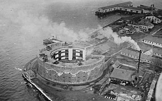

Castle Williams is the most recognizable landmark on Governors Island. At the time of its construction, 1807-1811, Castle Williams was the most advanced military fortification of its era. However, it never fired or received any shots in wartime. Castle Williams was built on an area of submerged rock at the northwest edge of the island, with a finger of land jutting out to its entrance. It faced the Battery on Manhattan where it would work in tandem with Castle Clinton, a smaller version of the Castle Williams design.
The three-story, circular structure was a prototype for a new era of seacoast fortifications. With its guns mounted in protected casemates—a system which had been introduced in France in the 1700s—Castle Williams was one of the most formidable of any American fort. Casemate emplacement allowed heavy guns to be fired within closed spaces, thus making possible the arrangement of armament in multiple tiers rather than simply placing cannon en barbette on the exposed parapet walls, protecting both guns and gunners. When completed it was capable of mounting 102 guns. The massive walls and the solid structural system made the fortification virtually bombproof. Today, Castle Williams is the best-preserved fort of its kind and is one of only three such castles still standing in the United States.
In 1805, Lt. Col. Jonathan Williams (1751-1815) was placed in charge of defenses for New York Harbor, as part of the federal Second American System of fortifications. He was the chief engineer of the U.S. Army and the first superintendent of the U.S. Military Academy at West Point. Williams had a solid theoretical knowledge of fortifications, learned while living in France under the auspices of his great-uncle, Benjamin Franklin.
The circular design required less troops and granted greater protection to both guns and men. Williams further strengthened the Castle's effectiveness by designing the apertures of the casemated embrasures through which the guns were fired so that cannon shot could not pass between the muzzle of the gun and the side of the embrasure. Further, the gun carriages were constructed to allow an angle of 54 degrees for the range of fire, ensuring that the lines of fire would cross each other at less than 20 feet from the exterior wall. These innovative features made Castle Williams one of the most formidable forts in the United States, and a key factor in deterring British attack on the city during the War of 1812. In 1810 the fort was named in Williams' honor, under a salute of 17 guns. The guns of Castle Williams, never fired in defense, were fired many times as salutary greetings to dignitaries arriving in the harbor, and for many years the fort's "sunset gun" marked the end of the day for New Yorkers.
By 1850, due to advances in weaponry technology, the defense of New York Harbor focused on the Narrows and the Long Island Sound; thus the fortifications at Governors Island were quickly obsolete. During the Civil War, the army estimated Castle Williams would be able to safely accommodate 150 Confederate prisoners of war; nearly 1,000 were imprisoned in the fort. For the remainder of the 19th Century, Castle Williams continued to be used as a prison, as well as quarters for new recruits and transient troops. During these years, the third tier was used to house prisoners and recruits, and while the first two tiers still contained guns, bedding for troops was placed in between the gun carriages.

The landmark in 1912 next to the island garbage incinerator [LOC]
Castle Williams served as an army prison until 1966. When the Coast Guard took over the island, it was used for meeting rooms, a Boy Scout meeting room for the children of the "Coasties," equipment storage and shop space. When the Coast Guard left the island in 1996, the historic building was used to store the base's lawnmowers.
Castle Williams was designated a New York City Landmark in 1967 and a National Historical Landmark in 1972. On Feb. 7, 2003, the Governors Island National Monument was established by Presidential Proclamation for the purpose of preserving and protecting Castle Williams and Fort Jay; the National Park Service took over management of Castle Williams. For the first time, public tours were conducted of its inner courtyard, but visitors were unable to see much.
In 2010 the landmark was closed for more than a year of renovations. The NPS cleaned and stabilized the structure using a $6.4 million federal grant. The project included asbestos and lead abatement. When it reopens in 2011, visitors will be able to explore not just the fort's round courtyard but also the roof and some of the interior, which had never been open to the public. Sweeping views of New York Harbor and the island are a treat. The NPS believes it will take an estimated 20 years to fully restore, rehabilitate, and preserve for future generations the landmark fortification.